더인 교육 10일차
들어가며 · Quiz (이 정도는 면접에서 물어볼 수 있다 - 반도체 상식) · 보충 설명 · 교재 · 강사님 딴소리 · 반도체 소재 · 페르미 준위 · 절연체와 유전체의 늬양스 차이 · Transistor Length · Capacitor · 기생 커패시터 · PN 접합의 원리 · MOS · C-V 커브 · 문턱전압 · CMOS Inverter 에 Photo mask가 몇 장이 필요할지 맞추기
1. 들어가며
- 1990년대 중반부터 일본이 약해짐 (미국의 규제 - Dumping?)
- 1990년대 중 후반부터는 인텔의 PC 시장 장악 때문에 압도적이었음
- 스티브 잡스 2007년에 처음으로 iPhone 공개, PC 사업 → 스마트폰 사업
- 2026년 기준 브로드컴, 퀄컴은 통신칩을 잘 만드는 곳. 마이크론도 DRAM 사업
2. Quiz (이 정도는 면접에서 물어볼 수 있다 - 반도체 상식)
Q1. 오시알페카나크마
A1. O Si(27.7%) Al Fe …
Q2. 30% 60% 3%
A2. 전세계 메모리 시장의 30% (DDR, NAND Flash, HBM), 메모리 반도체 삼성전자+하이닉스 전세계 비중 60%, 국내의 시스템 반도체 전세계에서 차지하는 비율은 3% 밖에 안됨.
시스템 반도체 쪽은 엔비디아, 퀄컴, 브로드컴, 애플 등이 독주를 하고 있었다. 미국이 시스템 반도체 쪽을 잡고 있다.
Q3. 8
Wafer 제조 공정 / Oxidation / Photo 공정 / Etch 공정 / Deposition & Ion Implant / Metallization / EDS 공정 (TEST) / Packaging
- CMP, Cleaning 도 물론 중요하지
- EDS는 Test를 통해 분량을 검출해냄 (외관 검사, 전기적인 검사..)
Q. 반도체가 무엇인가?
A.
- 전반적인 얘기: 외부에서 가해주는 자극 (전기, 빛, 열)에 의해 전류를 컨트롤 할 수 있는 물질
- 반도체의 종류: 메모리, 비메모리 반도체에 대한 설명을 할 수도 있을 것이다.
- 구성 성분으로 분류: 원소 반도체, 화합물 반도체, 합금 반도체
→ 역시나 정답은 없지만 오답은 있을 듯. 잘 정리해두기!
대상: “전반적인 얘기: 외부에서 가해주는 자극 (전기, 빛, 열)에 의해 전류를 컨트롤 할 수 있는 물질”
강사님이 면접관이라면 이렇게 답하길 원한다라는 말
Q4. V I P
A.
V = 전압
I = 전류
P = 전력
→ P = IV
- Power가 낮은 제품을 만들기 위해서는 전력 소모량이 낮아야 해. (시간 무시) 그렇게 되기 위해서는 전류가 덜 들어야하고 낮은 전압에서도 작동할 수 있어야 한다.
Q5. PPA
A.
- Power / Performance / Area
- Power가 적게 들고, 퍼포먼스 그러니까 속도가 빠르게 반응 or 작동 할 수 있어야 겠다, 그리고 칩도 작아져야 한 공간안에 더 많이 들어간다.
ex) 1GHz 1초에 10억 번 신호가 왔다갔다 하려면 얼마나 빠르게 신호가 왔다갔다 하겠어. (이런걸 제어하는 것도 다 반도체)
Q6. HKMG
A.
(1) High-k
- High-k metal gate
- Gate oxide의 두께가 얇아지면 전류 누설이 많이 된다. 그리고 얇아지면 균일하게 만드는 것도 어렵다고 한다. 두께 차이가 조금만 나도 특성 차이가 심해진다.
- 이제는 nm 단위에서 Å 스케일로 들어갔다.
- 유전체의 유전용량을 유지하면서도 더 이상 두께를 줄이지 않기 위해 High k 를 사용한다.
C = ε Ad
- 기존에는 Gate의 Metal를 Poly-Si 을 사용했다. 1414°C 정도의 M.P를 갖고 있기 때문에 사용했다. 차후 열처리 공정에서 버틸 수 있기 때문이다.
- Annealing 공정(Curing 해주는 공정)은 800-900°C 정도에서 진행하니 Poly-Si 를 사용할 때 문제가 없었다.
(2) Metal Gate
- 고유전율과의 조합을 끌어내기 위해서 다시 금속을 사용하려고 하는데, 녹는점이 역시나 문제가 된다.
- 하지만 이후 열처리 공정을 진행할 수 없으니 Poly-Si으로 공정을 진행하고 나중에 Metal을 넣어주는 Last metal gate 공정이라고 한다.
→ 드러낼 때는 Etch 하고, 증착(?)하고 CMP해서 Metal 채워 넣는다.
여기 뒤에는 공부해서 정리하기
- 더미 Poly Si를 사용해서 Source, Drain 형성, 고온 열처리를 끝낸 다음에 Poly Si를 제거하고 Metal를 채워 넣는다.
- 고유전율과의 조합은 다음과 같은 이유라고 하는데, 잘 이해가 안된다.
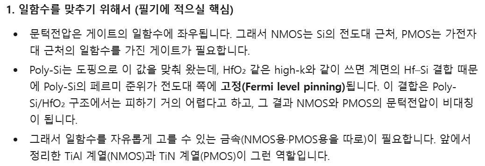
Q7. SoC, SiP, Chiplet (이 정도는 질문이 나올 수 있다)
A.
- SoC(System on Chip) / SiP(System in package) / Chiplet(칩 쪼가리?)
(1) SoC
- 칩 한 개 만들 때 CPU, GPU, … 다 들어가서 AP칩을 구성하는 것. 이런걸 말함(?)
- 설계할 때 웨이퍼 자체에 만든다
- 장점: 신호를 주고 받을 때 물리적인 거리가 가까우니까 빠르다.
단점: 다만 전부 다 넣으려고 하다보니 칩이 커진다. 칩이 커지면 수율이 덜 나오게 된다.
왜 수율 차이가 많이 나오는가?
- 12인치 Wafer에서 1cm², 4cm² 칩은 몇 개 들어갈 수 있는지 계산해보자.
| 구분 | 계산 (웨이퍼 넓이 ÷ 칩 넓이) | 웨이퍼 한 장에 들어가는 칩 수 |
|---|---|---|
| 12인치(30cm) 웨이퍼 넓이 | π × 15² | 약 706.9cm² |
| 칩 1cm² | 706.9 ÷ 1 | 약 707개 |
| 칩 4cm² | 706.9 ÷ 4 | 약 177개 |
- Yield는 푸아송비를 따르게 된다.
| 칩 넓이 | A × D₀ (D₀ = 0.5개/cm²) | 수율 Y = e−A D₀ |
|---|---|---|
| 1cm² | 0.5 | 약 60.7% |
| 4cm² | 2 | 약 13.5% |
- 따라서 수율이 이런식으로 4배정도 떨어지기 때문에 사이즈가 커지면
(2) SiP
- 패키징이 된 것을 합친다?
(3) Chiplet
Q8. 왕복 몇 n 차선
HBM
- 일반적인 DRAM은 64, 32, 16bit 이 나온다. 핀을 통해서 data가 나오는 정도가 이 정도가 된다는 것임.
- 하지만 HBM은 1024bit, 2048bit 으로 1024개, 2048개 나오는 것이다.
- HBM 자체는 DRAM을 쌓아서 만드는 거지?
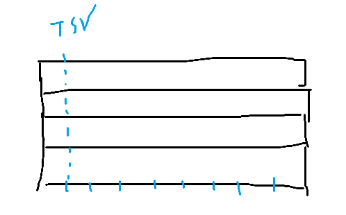
- PPA 관점에서 보면 면적도 좁게 할 수 있고, 처리할 수 있는 Data 양도 무지하게 많아졌다.
- 이렇게 연결시키는 기술이 TSV 기술이다.
Q9. 부르즈 칼리파 건물
- 수직 적층한 NAND Flash 설명하기
- 지금 이걸 몇 백층을 쌓고 있는 이유는 무엇인가? PPA에서 면적을 줄이기 위해서이다.
→ 따라서 엄청난 기술이 필요하다. 계속 쌓아가기 위해서는 포토, 에치, 증착이 계속해서 이루어져야 하고, 정렬도 잘 해야하고, 넘어지면 또 안된다.
비유) 두부를 300개 쌓아놓고 안무너지게 자른다고 생각
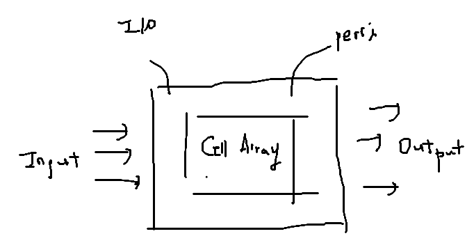
- Cell Array 주변부에 Perri 영역이나 I/O가 있어야 한다. 근데 이런 것들이 차지하는 비율이 크다 보니까 그걸 옆에다가 두는게 아니라 아래에 두려고 한다.
- Cell array 부분과 I/O 부분과 이런 부분들을 컨트롤을 어떻게 하면 잘할 수 있을까? 그러면서도 면적을 줄일려면 어떻게 해야할까? 이런 것들을 전부 고려해야한다.
Q10. Planer, Fin, GAA
- Transistor의 발전 과정이다.
- 여기에서 Planar을 안쓰는게 아니다. 20nm 정도는 Planar를 쓰는 것이고, 10nm 정도는 Fin을 쓰는 것이고, GAA는 2~3nm 를 사용하는 것이다.
- 적절하게 필요한 Transistor를 사용하는 것이지 기술이 발전되어서 GAA만 쓰고 이런건 절대 아님. I/O와 같은 경우는 Planar type을 쓴다. 기술이 더 어려워질 수록 돈도 많이 들고 수율 확보하기도 어려운 것이니까.
- Transistor가 작아지게 되면서 short channel effect, current leakage, 수율이 안나오는 문제 등등 여러 변수들이 생기게 된다.
ID ∝ μ Cox W/L
ID = 12 μ Cox WL (VGS − Vth)2
- W를 늘리는 것이 Planar → Fin → GAA 의 발전 방향으로 바뀐 것이다. 1면, 3면, 4면이 감싸게 되는 것이니까.
- L을 줄이는 것은 short channel effect 의 한계에 마주한 것이다. 그래서 W를 늘리는 쪽으로 방향이 달라진 것이다.
3. 보충 설명
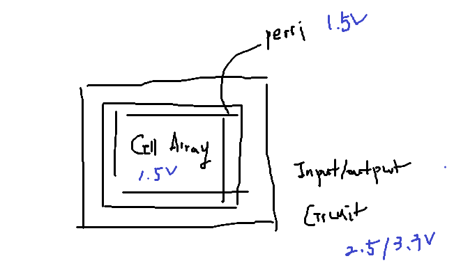
- 전압 볼트가 다른 이유는 노이즈로부터 구별하기 위해서이다.
- 전압이 다르면 사용해야하는 트렌지스터가 다르다.
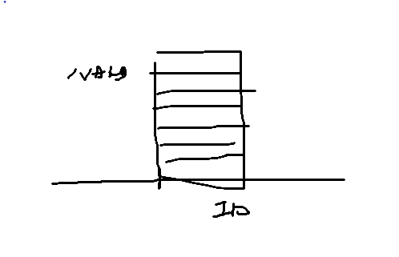
- 이왕 사용해야하는 전압도 다른데, 면적도 줄이자 라는 생각으로 이렇게 밑에 I/O를 넣는다.
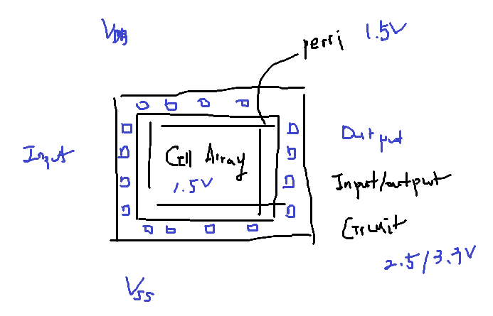
- VDD 와 VSS가 각각 50개 정도 존재할 때 Input, Output이 20개 정도 존재하는 느낌이라고 한다.
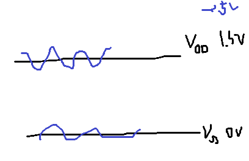
- 실제로는 노이즈가 껴서 전압이 흔들리기 때문에 그걸 고려해서 VDD 쪽에 1.5V가 아니라 2.5V를 걸어주기도 한다.
대상: “실제로는 노이즈가 껴서 전압이 흔들리기 때문에 그걸 고려해서”
여기 내용 조금 찾아보기
Q. AI를 반도체 공정에서 어떻게 적용하면 좋을까?
A.
- 공정, 장비에서 어떤 데이터가 나오고, 어떤 것을 평가하는지 알아야지 아이디어를 낼 수 있을 것이다
- 반도체 공정에는 어떤게 있고, 어떤 문제가 생길 수 있는지를 예측하려면 반도체 공정을 알아야 한다는 것이지
4. 교재
반도체란?
- 원래 Si는 부도체이고, 불순물을 주입하면 도체로 성질이 바뀌는 것이다.
- Flash 메모리는 일본 도시바에서 1984년에 처음 만들어졌음
반도체의 역할
- 교재 보고 마저 전부 정리하기
정류 작용: 직류로 교류를 바꾸거나, 전류가 흐르거나 흐르지 않게 하는 것 ex) Diode
전환 작용: ADC/DAC Analog ↔ Digital
증폭 작용:
Wafer 구조
- Die와 Die 라인 사이는 Scribe line이 있어서 여기를 자르게 된다.
Scribe line 구성요소
(1) 각종 소자
- 소자(트랜지스터, 저항, 커패시터)들이 Scribe line에 들어가 있다.
(2) 공정 모니터링 패턴
- 공정이 제대로 되고 있는지 확인하기 위해 공정 모니터링 패턴
(3) Photo Alignment key
- 포토공정을 진행하기 위해
→ 1~3번까지의 역할을 잘하고 나면 잘라도 된다.
Q. Contact은 어떤 Mask 위에 Align 하는가?
A.
- Active 하고 Gate 위에 Mask 를 정렬한다.
- Metal은 Contact Layer 위에 정렬한다.
반도체 칩/제품
- wafer 위에서 하나하나는 die, 그걸 패키징 하면 chip 이라고 한다. 그리고 그걸 PCB 기판에 장착하면 모듈이 된다.
- 패키지는 기본적으로 BGA 이다.
시스템 반도체
- 핵심은 트랜지스터를 만드는 것이다. 여기에는 DRAM처럼 저장할 수 있는 커패시터 같은게 없음
DRAM
- DRAM Cell은 Capcitor를 잘 만드는 것이 중요하다.
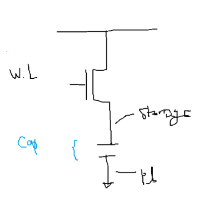
- Capacitance 값이 커지기 위해서는 유전상수가 커지고, 면적이 커지고, d가 얆아져야 한다.
- 그림에서 A/R이 큰 것은 면적을 키우기 위해서이다.
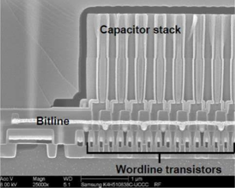
Flash 메모리
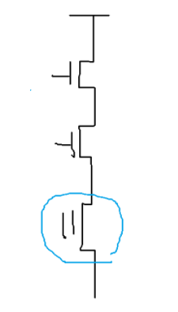
- NAND에서는 정보를 저장하는 곳이 transistor 위에 작게 있다. (알고 있었지만 회로도로 보니까 조금 어색했음)
→ 회로가 생김새가 이게 맞나?
- Flash는 잘 쌓는게 핵심, DRAM은 capacitor잘 만드는게 핵심이고, Logic은 트랜지스터를 작게 만드는 게 핵심이다.
C = k Ad
대상: “Flash는 잘 쌓는게 핵심, DRAM은 capacitor잘 만드는게 핵심이고, Logic은 트랜지스터를…”
이런 지식이 툭툭 머릿속에서 튀어 나와야 함
Q. Wafer가 8인치 → 12인치로 커지면 얻는 이득?
A.
증착 공정, 이온 주입 공정 등에서는 균일도를 유지하기는 조금 어려워질 수는 있겠지만 wafer가 커짐에 따라서 한 번에 더 많은 Die를 만들 수 있잖아? 그러니까 2.25배 (4→9) 이득이다 라는 것이지. (8인치 → 12인치)
5. 강사님 딴소리
<훈련> 선배님이 시키셨던 것들
1. 삼전 입사해서 선배님에게 A4 용지에 층층이 어떻게 쌓아야하는지 수직 구조도 그리기.
- 그려보니 머릿속에서
2. Scribe line에 있는 capcitor, resistor, transistor를 다 측정해봐라 (Wafer 평가)
- 측정 장비를 알아야하고, 어떤 특성이 있는지 공부할 수 있는 것이다.
내 생각: 아무리 공정 하나를 잘 안다고 하면 뭐하냐. 반도체 자체가 무엇인지, 기본적인 제작 방법이 머릿속에 그려지지 않으면 무슨 의미가 있는가?
→ Dr.Sammy 강의를 다시 보면서 혼자 화이트보드에 실제로 강사님이 하셨던 것처럼 훈련해보기? (식각 gas는 뭘 쓰고, mask는 뭘쓰고, cleaning, CMP 등등 언제 사용하고 이런 것들을 혼자 판단해볼 수 있냐 이거야
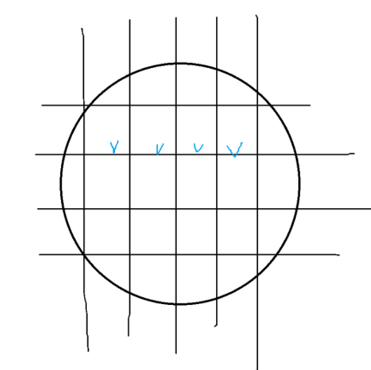
Wafer에서 전기적인 특성을 측정해보면?
- Photo Mask에서는 동일하게 패턴을 그려놨지만 실제 wafer 상에서 transistor이 구역마다 특성이 다 다르다는 것이지. Transistor에서 가장 중요한 특성은 문턱 전압인데 이게 위치별로 다르다라는 것이다.
- 왜 다를까? 산화 공정, 플라즈마 공정 어딘가에 장비에 들어갔을 때 각 wafer 위치별로 느껴지는 상황이 다르다는 것이다. 유체의 흐름이 다를 것 아닌가?
문제를 찾아가는 과정
- 일단 소자의 구조, 작동 원리, 중요 파라미터가 뭔지를 알고 있어야지 시작할 수 있겠지?
- Wafer 자체는 균일했던거야? 업체에서 제대로 제공한거야?
- 산화 공정 장비가 달라진건 아니야?
→ 장비, 소재 회사건 상관없이 이렇게 측정하고 분석하고 원인을 찾는 과정은 하게 된다.
내 생각: 학부연구생 경험이 이런 포인트에서 접근해야하는거 아니야?
→ 내가 문제를 맞닿뜨렸을 때 이거 어디서부터 문제가 있는지 찾아가는 그 과정을 다시 복기하면서 반도체는 아니지만 문제를 찾고, 내가 생각하는 변수를 바꿔서 해결해 나가는 과정 자체를 강조하기
이게 반도체 경험이 아니라고 내가 했던 경험을 평가절하 할 필요가 없다. 그걸 반도체 경험이 아니다!라고만 보는건 진짜 어리석은 생각. 시간을 두고 복기하기 (할 수 있다!)
6. 반도체 소재
- np = ni² 에서 ni 값은 1.45 × 10¹⁰ cm⁻³
- 둘을 곱하면 10²⁰ 이 된다.
- 따라서 p = 10¹⁵만큼 있으면 n = 10⁵ 만큼 있는 것임. 따라서 다수, 소수캐리어로 나눠지는 것이지 p-type에는 정공만 n-type에는 전자만 존재하는 건 아니다.
7. 페르미 준위
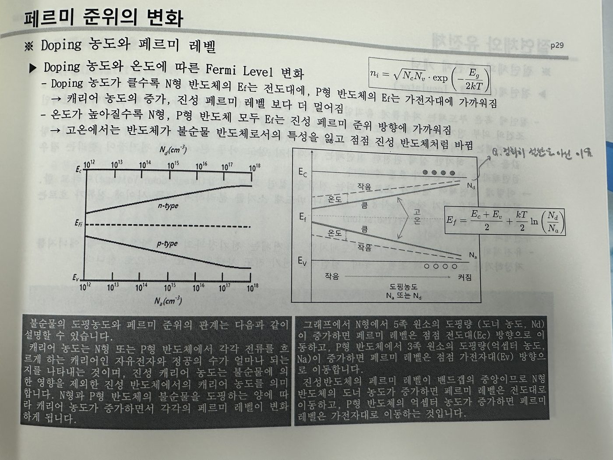
- 전자가 발견될 확률이 1/2인 준위
- 29pg 사진 추가
8. 절연체와 유전체의 늬양스 차이
- 금속 배선 사이를 말할 때는 절연체라고 말해야한다. 그리고 이 때는 유전 상수가 낮은 애를 써야한다. 전자가 잡히면 안되니까.
- MOS에서는 Metal 표면에 전하가 잘 끌어와져야 하기 때문에 유전 상수가 커야한다.
→ 목적에 따라 High-k와 Low-k가 전부 사용된다.
예시) 유전 상수 값
SiO₂: 3.9 / Si₃N₄: 7 / HfO₂, ZrO₂: 25
→ 따라서 MOS에서 두께를 더 이상 줄이지 않아도 유전상수가 높은 소재를 활용
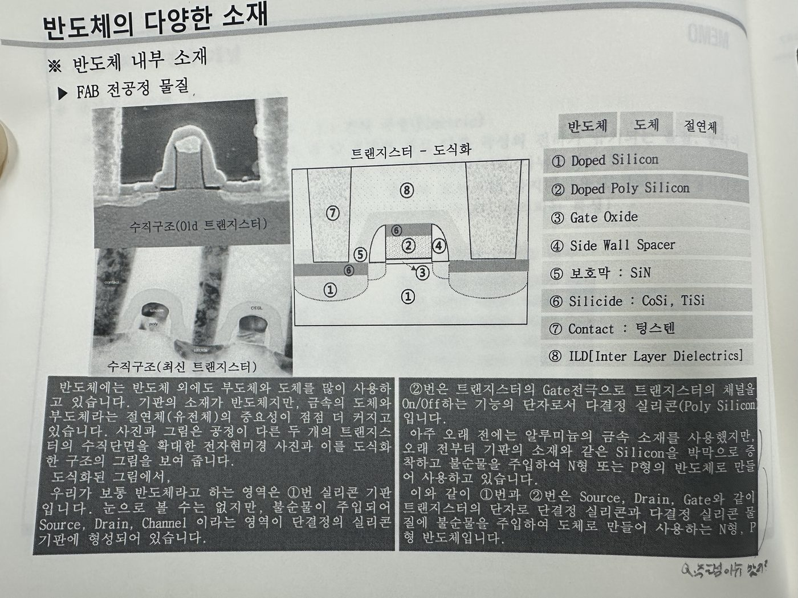
- Silicide도 도체라고 한다. (이건 확실하게 챙겨가자 제발)
- LDD 영역 HDD 영역에 대한 설명. 이때의 Light와 High는 도핑된 농도 정도를 얘기함
→ 도핑 농도가 높을 때는 전기장이 강하게 걸리기 때문에 LDD 영역을 일부러 넣는 것임. 이러면 당연하게도 포토 공정이 추가가 되겠지
9. Transistor Length
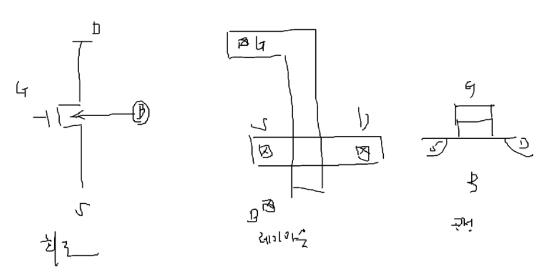
- 회로 설계, 레이아웃 엔지니어, 공정 엔지니어에 따라서 어떻게 그리는지가 조금씩 다르다.
- 다수 캐리어가 공급되는 것을 Source, NMOS에서는 Source에서 전자가 공급된다. PMOS에서는 Source에서 정공이 공급된다.
→ 전자가 흐르는 건 위 설명과 같고, 전류는 반대
대상: “다수 캐리어가 공급되는 것을 Source, NMOS에서는 Source에서 전자가 공급된다. PMOS에서는…”
반도체하는데 이걸 모르면 안되지
10. Capacitor
- 전자 1개의 전하량: −1.602 × 10⁻¹⁹ C
- 1 A = 1초에 전자 약 6.24 × 10¹⁸개가 흐르는 전류
대상: “전자 1개의 전하량:”
이런거 별거 아니니까 외워두자
(1) V=IR
- Vₓ 값구하기
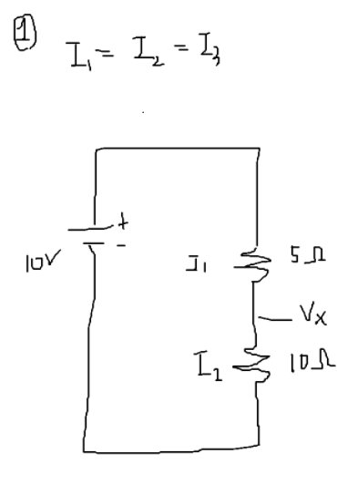
I₁ = (10−V)/5 = V/10
I₂ = (V−0)/10
V=100/15
(2) MOSFET의 원리
대상: “(2) MOSFET의 원리”
다시 확인해보기
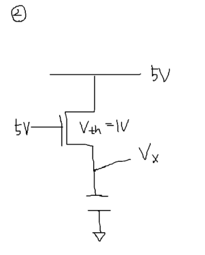
- 이때는 4V? 문턱 전압에 1V는 어디에 쓰이는거야?
→ 문턱 전압은 channel을 형성하는데 사용됨
- Drain은 물의 양, Gate는 물이 지나가는 통로를 열어 놓는 정도이다.
- Gate가 열려 있는 정도이고 열려있는 만큼 통과할 수 있다.
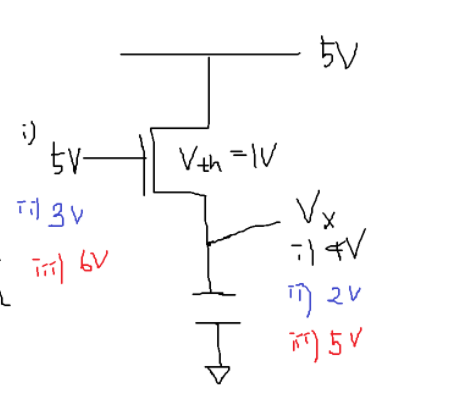
11. 기생 커패시터
- τ = RC → 저항이 크거나 정전용량이 크면 시간 지연이 된다.
- 43pg 추가하기
12. PN 접합의 원리
- 도핑 농도 차이에 의해 생기는 것을 Built-in potential 이 생긴다.
- Diffusion 전류와 Drift 전류가 존재한다.
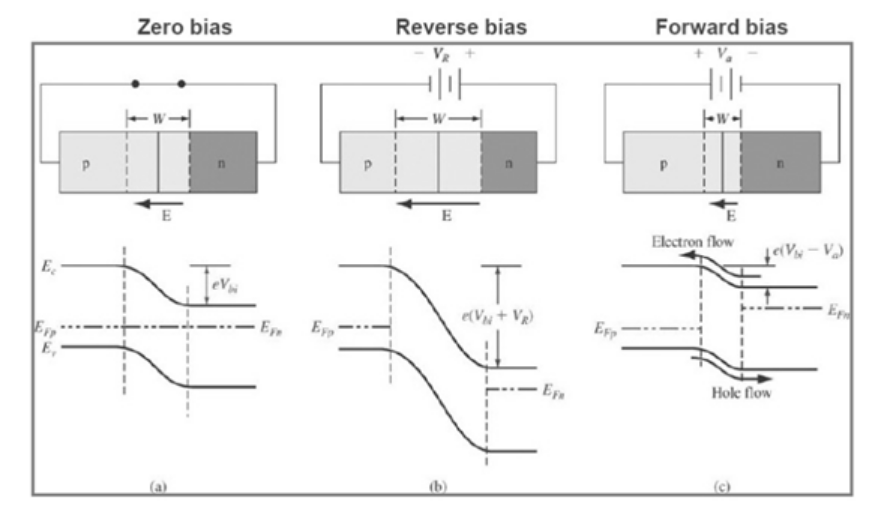
- 역방향 bias와 순방향 bias에 대해서 설명
대상: “역방향 bias와 순방향 bias에 대해서 설명”
천천히 그리면서 이해하기
Zener Diode
- PN 접합의 도핑 농도를 증가하면 해당 현상이 생긴다.
대상: “PN 접합의 도핑 농도를 증가하면 해당 현상이 생긴다.”
다시 책 보고 확인하기
PN Diode
- 도핑 농도를 알면 VBi 식에 대입해서 구할 수 있다.
- 고농도에서 공핍 영역의 폭이 줄어들게 된다. → 고전압 소자에서 잘 견디게 하기 위해서는 공핍영역이 어느정도 넓어야 한다. → 따라서 저농도로 도핑해야한다.
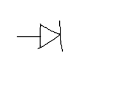
- PN Diode는 한쪽 방향으로만 전류가 흐르는 특징을 갖고 있다. 그래서 표시도 -ㅣ>l 이런식으로 하니까
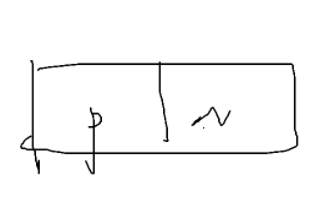
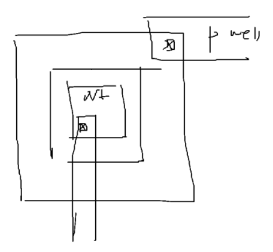
13. MOS
- 실제 PN 접합이 왼쪽 그림처럼 생긴게 아님 오른쪽처럼 레이아웃이 그려지는 것임
- 일단 Poly-Si로 만든 다음에 나중에 Metal 공정을 진행한다.
- Gate Last 공정이라고 한다.
14. C-V 커브
- NMOS 기준으로 배운 내용 싹 정리하자 교재 보고
- capacitor에서는 교류를 주는데, low frequency를 주면 소수 캐리어가 잘 몰려간다. High Frequency 를 주면 소수캐리어가 잘 몰려가지 못한다.
64pg
- gate에서 문턱전압보다 낮은 전압을 주면 cut-off (VGS < Vth)
- 선행영역은 channel이 빵빵하게 형성되어있다.
- pinch-off는 채널이 딱 끊어지려고 하는 순간이다.
- 포화 영역은 채널이 끊어지면서 전압이 증가하지만 전류가 증가하지 않게 된다. (IS DS curve)
– 그래프에서의 점선을 pinch-off 구간으로 포화 되기 직전에 channel이 끊어질랑 말랑 하는 순간을 말한다.
→ 여기 관련해서 그림, 그래프는 차분하게 이 교재에 나온 정도만 다시 정리하기 (모르겠으면 세종대 이원준 교수님 영상 참고하기)
대상: “capacitor에서는 교류를 주는데, low frequency를 주면 소수 캐리어가 잘 몰려간다. Hi…”
예?
15. 문턱전압
- 수식을 보면 알겠지만 다양한 변수들에 의해 결정된다.
- Vth를 낮게 하기 위해서는 Cox 두께가 얇아져야 한다. 그런데 실제로 이렇게 하기보다는 도핑을 어쩌구저쩌구?
- work function을 어쩌구저쩌구 flat band를 조절?
- 산업체에서는 Vth를 딱 정의하기가 어렵다.
대상: “산업체에서는”
여기 내용 놓쳤음
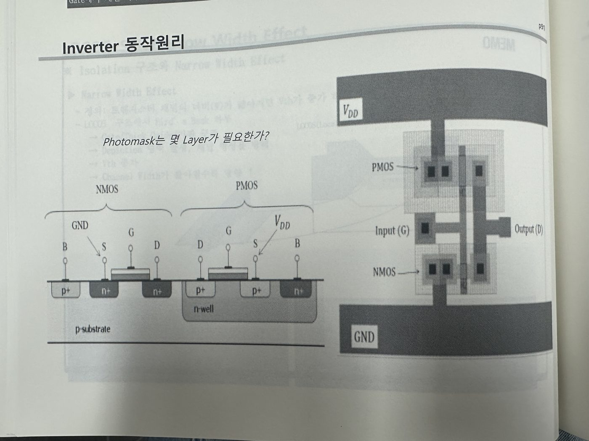
16. CMOS Inverter 에 Photo mask가 몇 장이 필요할지 맞추기
N well 2. Active 3.Gate 4. N⁺ source, drain 5. P⁺ source, drain 6. Contact 7. Metal photo들이 필요하다!
→ 가장 기본적인 구조
- 이건 최소한의 조건이고, 여기에서 하나라도 안뚫리면 작동을 안하기 때문에 double contact을 한다는 것임
- 회색 N-well → 초록색 Active → 빨간색 Gate → N⁺ Source Drain은 위에는 왼쪽, 아래는 오른쪽 → P⁺ 는 아래와 반대 → 검은색 네모는 contact → 뭐가 metal?
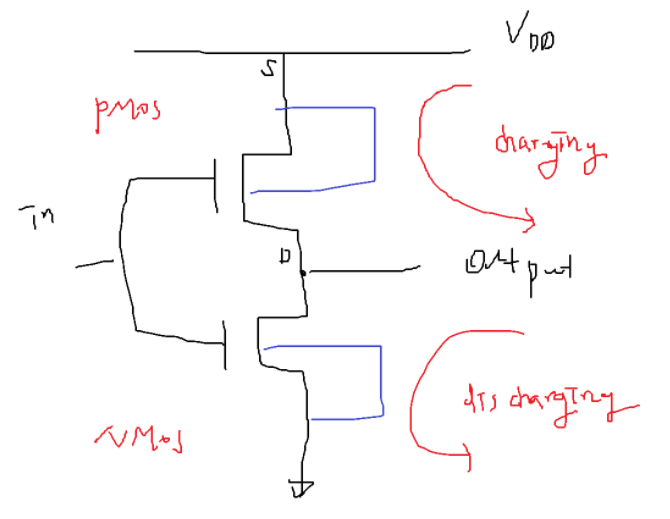
- VDD 쪽에 Source가 있고, 전하가 무한 공급된다.
- 왜 length에서 PMOS의 너비가 더 큰 이유는? 전자의 mobility가 크기 때문에 2.7배 정도 빠르다. PMOS에서 2.7배 정도
- 만약에 둘이 전하 캐리어의 이동 속도가 같지 않으면 속도 차이에 의해서 Rising, Pulling의 차이가 난다??
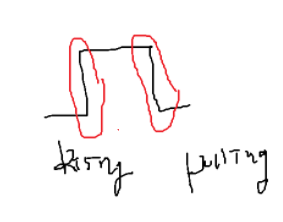
→ 그래서 PMOS 쪽에서 너비를 더 넓게 해준다?
- reverse를 쓴다는게 무슨 말이야?? 어디를 말하는거지?
- n-well을 항상 VDD에 묶어서 전위차가 0이 되게 만들어준다.
- Metal이 위 아래 파란색인데, 저항 drop ?을 막기 위해 두껍게 해줘야 한다.